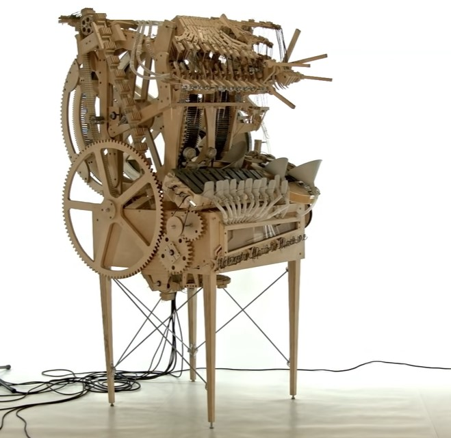
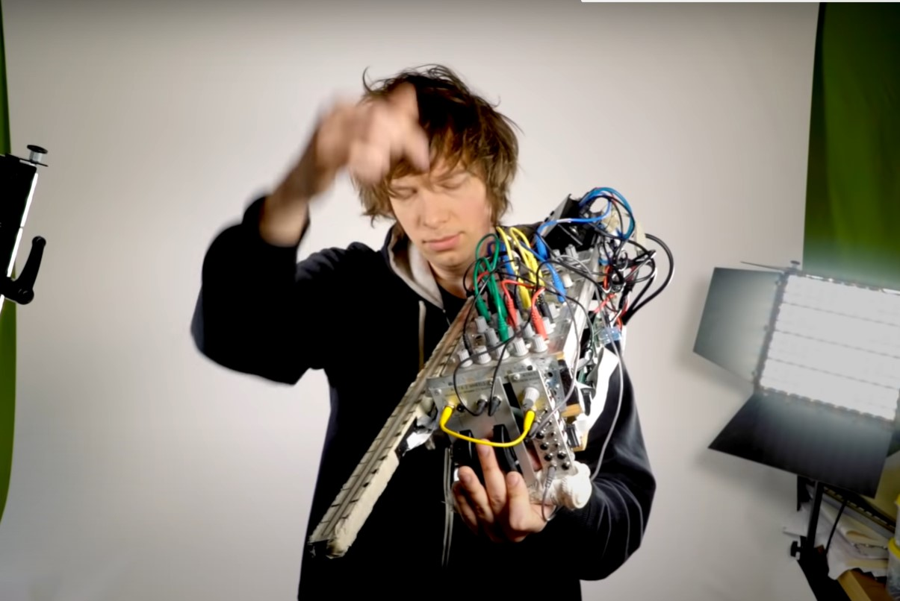
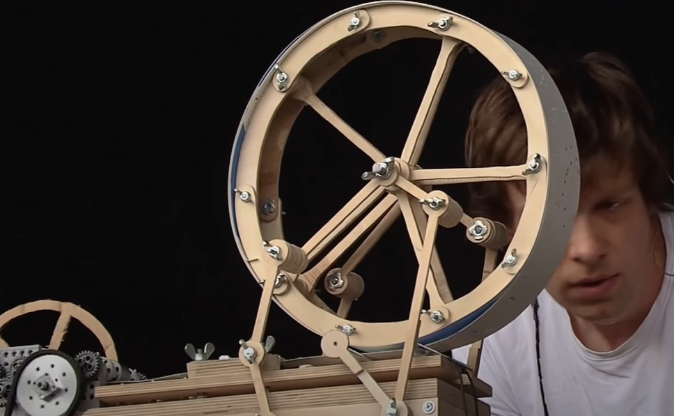

Marble Machine X
Marble Machine
The original marble machine that brought Wintergatan to global recognition and the inspiration for the Marble Machine X. The machine is powered by a hand-crank, and works by raising steel marbles through the machine into multiple feeder tubes, where they are then released from height via programmable release gates, falling and striking a musical instrument below. Instruments played by marbles striking them include a vibraphone, bass guitar, cymbal, and emulated kick drum, high hat and snare drum sounds using contact microphones. The music score is stored on two programmable wheels that utilize Lego Technic beams and stud connectors to trigger armatures to release the marbles. A final music video showing the machine in use was released in 2016, and has been viewed over 165 million times. 
Modulin
 The modulin is a contraption created by Martin also known as the Modular Violin. The pitch of the modulin is controlled by your left hand . With the whole instrument set to the major scale its possible to play in any key. The volume is adjustable while playing using a wheel by your left hand. using a ribbon detector that detects the users finger position and pressure you can have full control of the entire instrument. Decay can also be changed using knobs on the instrument.
Starmachine
 Also known as the music box, the Starmachine was one of the first contraptions brought onto stange by Wintergatan